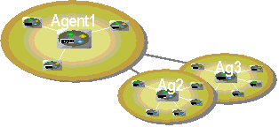
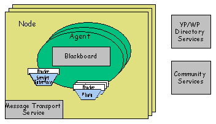

Welcome to the Cognitive Agent
Architecture (Cougaar) Open Source Project site. Cougaar is a
Java-based architecture for the construction of large-scale
distributed agent-based applications. It is a product of two
consecutive, multi-year DARPA research programs into large-scale agent
systems spanning eight years of effort.
The first program conclusively
demonstrated the feasibility of using advanced agent-based technology
to conduct rapid, large scale, distributed logistics planning and
replanning. The second program developed information technologies to
enhance the survivability of these distributed agent-based systems
operating in extremely chaotic environments.

The resultant
architecture, Cougaar, provides developers with a framework to
implement large-scale distributed agent applications with minimal
consideration for the underlying architecture and infrastructure. The
Cougaar architecture uses the latest in agent-oriented component-based
design and has a long list of powerful features.
In addition to the core architecture, documentation, and installers
you will find here, this site contains a variety of demonstration,
visualization and management components to simplify the development of
complex, distributed applications.
As of the end of 2004, Cougaar is no longer
DARPA-sponsored. The community will continue to provide periodic
stable releases of the Cougaar Core Architecture as needed and agreed
upon as a group. The vibrancy and evangelism of Cougaar is in the
hands of
you, the open source Cougaar user and developer.
The newest version of the architecture is v11.4. This site also
contains all of the source code, bug tracking, Wiki pages, developer
builds, mailing lists, and various Cougaar-related papers.
The "Cougaar" project (
http://cougaar.org/projects/cougaar/) is the
place where one can download the moby zips, overarching documentation
such as the CDG, and published papers. The source for the moby zips is
maintained separate projects, such as core (
http://cougaar.org/projects/core/) and planning
(
http://cougaar.org/projects/planning/).
Cougaar is wholly supported by the open source community. It
was originally generously funded by the DARPA UltraLog program.
Cougaar is a full-fledged distributed agent architecture. See below
for details. 
For a basic overview of Cougaar, installation, comparison with other
architectures, and other frequent questions, please see our FAQ. (Online here.)
Cougaar has a long list of features, and the Cougaar site hosts
many projects that add to the capabilities.
CougaarSE is easy to install. It will run on most OSes on desktops. In past versions, MySQL was usually
required, and installers were provided. Now, many Cougaar applications
will not require MySQL, so we just use ZIP files.